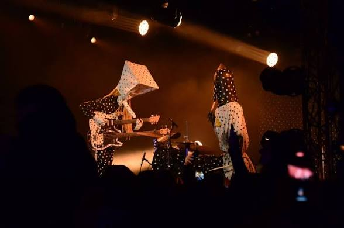

🎸Angine de Poitrine — “Utzp” — CERTIFIED MGC HG-70

🏛 MGC LOWER COURT OF APPEALS
- 🏛️ OFFICIAL REGISTRY TRANSCRIPT
- INQUEST SUBJECT: Angine de Poitrine — “Utzp” (Live at Pelpass Festival, Strasbourg, France — May 16, 2026)
- FINAL CERTIFIED ALLOCATION: MGC HG-70 (Top Pop Hybrid Genre Audio-Visual Specimen)
- JURISDICTION: The Supreme Court of Consensus (Specialized Technical Registry)
- PRESIDING: Judge Mina, Chief Grader MGC & The High Court Technical Bench
📜 EXECUTIVE OVERVIEW: THE IMPOSSIBLE 19🎸GENRE DIE STRIKE
Most live festival recordings suffer fatal structural corrosion under the 5x numismatic magnifying lens—crippled by shaky handheld framing, muddy open-air acoustics, and predictable setlist pacing. Yet when Angine de Poitrine’s “Utzp” (Live at Strasbourg Pelpass Festival) came before the High Court, the Technical Registry uncovered a genuine numismatic unicorn: a single continuous live performance fusing 19 distinct musical genres onto one unbroken rhythmic grid without a single tempo fracture, missed cue, or structural scuff.
⚖️ I. THE JUDICIAL TIMELINE & APPELLATE OVERRIDE
1. Initial Lower Court Audit (Proposed Ceiling: MS-68)
- During baseline forensic inspection, the Lower Court flagged localized visual fragmentation (handheld festival camera shake) alongside raw open-air acoustic saturation (ambient crowd bleed). Applying standard studio-cinema rules, the Lower Court proposed a protective ceiling at MS-68 (Choice Gem Specimen).
2. The Chief Grader’s Appellate Challenge
- The Chief Grader filed an immediate appellate brief contesting the MS-68 cap. The defense proved that open-air crowd resonance and physical lens vibration are not circulation defects—they function as an intentional Proof-Like (PL) environmental transfer, transmitting the live electricity of the Strasbourg festival floor directly to the viewer.
3. The 19-Point Strategic Override
- To settle the deadlock, the Chief Grader entered a complete 19-Genre Forensic Composition Matrix into evidence. The audit proved that every stylistic pivot—from acoustic French-Canadian folk picking to high-velocity speed metal and smooth soul—locked mathematically onto the master rhythm grid with zero pacing scuffs.
4. Final Supreme Court Decree
- The High Court sustained the appellate brief in full, expunged the handheld camera scuff from the ledger, and elevated “Utzp” to the Specialized Technical Registry as the undisputed Top Pop King of Hybrid Genre Live Execution at a Certified MGC HG-70.
🎛️ II. THE COMPOSITIONAL MATRIX (THE 19-GENRE FORENSIC LEDGER)
Under the 5x audio-visual lens, the Supreme Court certifies the exact four-movement structural progression of the strike:
Movement I — The Roots & Frontier Initialization (Genres 1–5): French-Canadian Folk ➔ Country ➔ Old Western ➔ Surf ➔ Mexican / Ranchera
- Forensic Note: Establishes an immediate acoustic-to-twang foundation, pivoting seamlessly from brisk Quebecois folk strumming into dusty Western gallops, reverb-drenched Surf runs, and crisp Ranchera cadence without dropping a single beat—conjuring the vivid image of a Mexican cowboy in full uniform surfing a wave.
Movement II — The Rhythmic & Hypnotic Metric Shift (Genres 6–10): Reggae ➔ Polka ➔ Psychedelic ➔ Acid ➔ Trance
- Forensic Note: Re-engineers the downbeat mid-flight—inverting off-beat Reggae syncopation into high-velocity Polka drive before dissolving the room into swirling Psychedelic textures, squelching Acid modulation, and locked-in Trance momentum.
Movement III — The Heavy Sonic Metamorphosis (Genres 11–15): Guitar-Loop Big Brass Simulation ➔ Techno ➔ Rock ➔ Heavy Metal ➔ Speed Metal
- Forensic Note: The decisive technical showstopper. Layered guitar loops stack into a full Big Brass section simulation before detonating into industrial Techno pulse, classic Rock crunch, soaring Heavy Metal riffing, and razor-sharp Speed Metal velocity—all engineered live on stage with zero backing-track safety nets.
Movement IV — The Controlled Deceleration & Velvet Landing (Genres 16–19): Dynamic Structural Deceleration ➔ Funk ➔ Jazz ➔ Soul
- Forensic Note: Rather than ending on chaotic noise, the arrangement executes a precision-calibrated cooldown—bleeding high-velocity Speed Metal aggression smoothly into tight pocket Funk, sophisticated Jazz voicings, and a warm, uncirculated Soul resolution.
⚖️ 🔍 III. FINAL SEALED VERDICT
- Visual & Environmental Strike: Certified Proof-Like Live Transfer—camera motion mirrors rhythmic escalation rather than operator error.
- Audio & Structural Alloy: 19 of 19 genre transitions certified defect-free under 5x forensic magnification.
- Permanent Registry Standing: Angine de Poitrine’s “Utzp” (Live at Strasbourg Pelpass Festival, May 16, 2026) is permanently sealed in the MGC Specialized Technical Registry as Certified MGC HG-70 (Top Pop Hybrid Genre Specimen). Case closed! ⚖️🎛️🔥🏛️

• © 2026 MOVIE GRADING CONSENSUS. All Sovereign Rights Reserved.